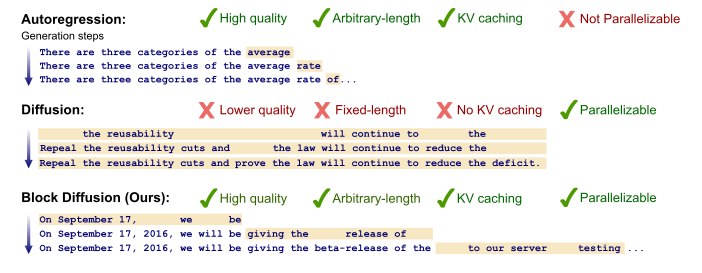
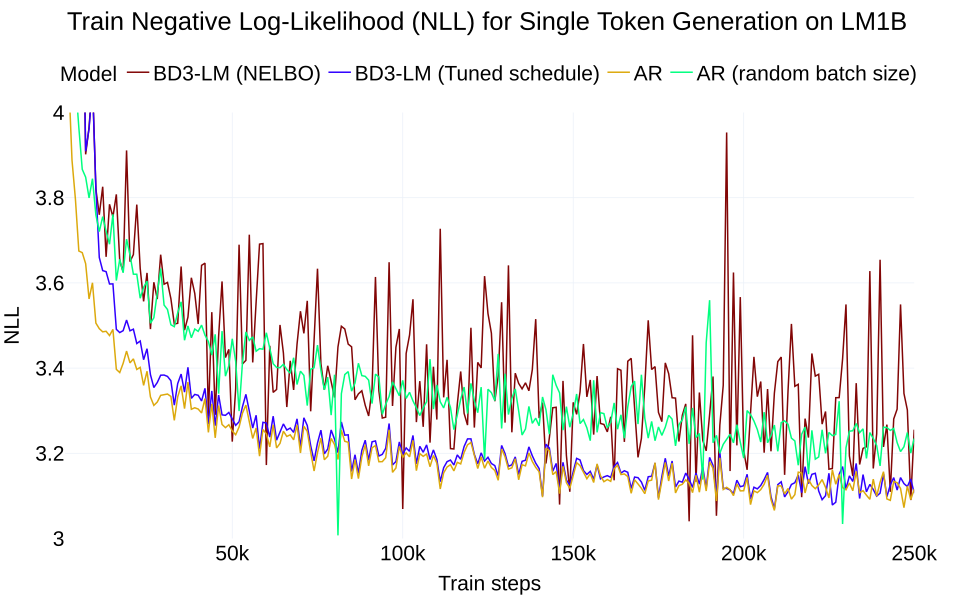

块扩散：在自回归与扩散语言模型之间插值
Block Diffusion: Interpolating Between Autoregressive and Diffusion Language Models
GitHub star 为 2026-10-19 的快照。阅读状态、进度与收藏只保存在你的浏览器里。
逐节精读
这部分按论文的章节顺序，用本站自己的话把整篇论文从头讲一遍。读懂某个概念需要的背景知识，会在第一次用到它之前单独讲清楚（青色框）。每个结论都尽量说出“因为什么、所以什么”。论文以 CC BY 4.0 许可发布，所以原文的图 1、图 2 直接放在讲到它的地方；其余概念（训练用的注意力掩码、块长 4 的生成过程、噪声调度、各表的数字）用本站自己画的示意图和图表补上。标“推算”的数字是本站根据论文数据或官方代码算出来的，不是论文原话。每节末尾有英文原文的链接。
0 导读：这篇论文解决什么问题
今天的大语言模型几乎都是自回归（autoregressive，下文简称 AR）模型：它们从左到右一次写一个 token，每写一个都要把整个网络算一遍。扩散语言模型换了一种思路：先摆出一整段全是掩码符号 [M] 的“空白画布”，再分好几轮把 [M] 换成真正的词，每一轮可以同时填好几个位置。这样做在原理上有两个吸引人的地方：一次前向能产出多个 token，因而可能更快；生成时能看到整段上下文，因而便于在中间填空、施加约束。
但在这篇论文写作时（2025 年初），离散扩散语言模型在三件实际的事情上比不过 AR：它们只能生成训练时定好的固定长度；它们用双向注意力，没法像 AR 那样缓存已经算过的 key 和 value（KV 缓存），每一步都得把整段重新算；它们的困惑度（衡量语言建模能力的标准指标）也明显更差。
这篇论文提出块扩散（Block Discrete Denoising Diffusion Language Models，简称 BD3-LM）。做法是把序列切成长度为 \(L'\) 的块：块与块之间按 AR 的顺序一块接一块地生成，每个块内部用掩码扩散来生成。块长 \(L'=1\) 时它就是 AR，块长等于整条序列时它就是全序列的掩码扩散模型 MDLM，中间的块长在两者之间连续过渡。因为块间是 AR，前面已经写完的块可以缓存 K/V，生成也可以一块一块往后接，长度不受限制；因为块内是扩散，一个块里的若干 token 原则上可以并行地写出来。
论文的另一半是一个诊断：即使把块长设成 1，让训练目标在期望上与 AR 完全相同，用扩散目标训练出来的模型困惑度仍然比 AR 差 2.7 左右。作者把这个差距归因于训练时梯度估计的方差，并提出“裁剪”的噪声调度，在训练过程中用数据挑选方差最小的掩码率区间。最终，一个 1.1 亿参数的模型在 LM1B 和 OpenWebText 上刷新了离散扩散的困惑度纪录（OpenWebText 上 ≤ 20.73，此前的 MDLM 为 ≤ 22.98），但仍落后于同规模 AR 的 17.54；生成质量的评测里，每生成一个 token 仍要调用一次网络，块内并行带来的加速并没有被测量。
读完这部分，你应该能回答这几个问题：
- 块扩散的似然怎么写？为什么块长 1 就是 AR、块长 \(L\) 就是 MDLM？
- 全序列扩散为什么不能用 KV 缓存，块扩散为什么可以，而且缓存是精确的？
- 训练时每个块为什么要过两遍网络？那张 \(2L\times 2L\) 的注意力掩码每一块是什么意思？
- 块长 1 时目标在期望上等于 AR，为什么训练结果还是更差？这里的“方差”具体是什么的方差？
- 裁剪噪声调度做了什么？为什么不同块长偏好不同的掩码率区间？
- 困惑度、生成困惑度这些数字是在什么条件下测的？离 AR 还有多远，付出了什么代价？
1 引言：离散扩散的三个短板，以及“按块生成”这条路
自回归模型写文字像“接龙”：给定前面所有的 token，预测下一个 token，写上去，再预测下一个。它写 \(L\) 个 token 就必须调用网络 \(L\) 次，因为第 \(\ell\) 个 token 必须等前 \(\ell-1\) 个都确定才能写。
掩码扩散模型写文字像“填空”：先摆出 \(L\) 个 [M]，网络一次看到整段（包括左右两边），对每个 [M] 给出“这里应该是哪个词”的概率；采样器挑一部分位置填上，其余仍是 [M]；再把新的画布交给网络，重复几轮，直到填满。因为一次能填好几个位置，调用网络的次数可以少于 \(L\)；因为网络看得到右边，它天然会做“中间填空”。
一个直观的类比：AR 像从左到右一口气写作文，写过的字不再改；扩散像先把整篇的格子都画好，然后一遍遍地往格子里填字，每一遍都参考已经填好的所有格子。
论文列出了离散扩散当时面临的三个限制。
- 只能生成固定长度。全序列扩散在开始时就要决定画布有多长，训练时上下文是 1024 个 token，生成时一般也就是 1024 个。但聊天这样的应用里，回答该多长事先并不知道。
- 不能用 KV 缓存。AR 模型里，一个 token 的 key 和 value 只取决于它自己和它左边的 token，写下之后就永远不变，所以可以存起来反复用（KV 缓存的来龙去脉见 vLLM 精读 §2.2）。扩散模型用双向注意力，每填上一个 [M]，所有位置“看到的东西”都变了，之前算出的 key、value 全部作废，每一步都要把整段从头算一遍，推理效率因此大打折扣。
- 困惑度落后。按标准的语言建模指标，离散扩散模型仍明显差于 AR，这限制了它们的用途。
论文的办法是块扩散，也叫“半自回归”：把 token 分成若干块，在块的层面定义一个自回归分布（第 \(b\) 块以前面所有块为条件），每个块的条件分布再用一个离散去噪扩散模型来描述。这样一来，块与块之间保留了 AR 的结构，KV 缓存和任意长度生成都回来了；块内仍是扩散，保留了并行生成的可能。此前已经有人做过“按块的扩散”（SSD-LM 等），但它们是在词向量上做高斯扩散，算不出似然；本文用的是离散的掩码扩散，可以给出似然的上界，从而能和 AR 公平地比较困惑度。
想法说起来简单，做起来有两个难点。第一，训练目标没法用一次普通的前向算出来：第 \(b\) 块的去噪既需要加了噪声的本块，又需要干净的前文，必须设计专门的训练算法。第二，扩散目标的梯度方差很大：作者发现，哪怕块长为 1（这时它和 AR 理应等价），用扩散目标训练的模型也比 AR 差。论文为此推导了梯度方差的估计量，证明方差是扩散与 AR 之间困惑度差距的一个重要来源，并设计了降低方差的噪声调度。

论文总结的贡献有四条：提出块离散扩散语言模型（块间 AR、块内离散扩散，支持变长生成与 KV 缓存）；提出能利用整批 token 的高效训练算法；指出梯度方差是限制扩散模型表现的因素，并提出数据驱动的低方差噪声调度；在困惑度上刷新离散扩散的纪录，缩小了与 AR 的差距。
2 背景：自回归模型与离散去噪扩散
2.1 自回归模型与困惑度
记一条长度为 \(L\) 的 token 序列为 \(x=(x^1,\dots,x^L)\)，它来自数据分布 \(q(x)\)。AR 模型把序列的对数概率拆成一连串条件概率之和：
每一项都由神经网络直接给出，所以训练就是“预测下一个 token”：一次前向里，每个位置都输出一个分布，每个位置都贡献一个交叉熵损失，\(L\) 个 token 全部参与训练。代价是生成时必须走 \(L\) 步。
困惑度（perplexity，PPL）是平均每个 token 的负对数似然取指数：\(\mathrm{PPL}=\exp\!\big(-\tfrac1L\log p_\theta(x)\big)\)。它可以理解成“模型在每个位置平均相当于在多少个等可能的候选里犹豫”。PPL 越低越好。
PPL 是指数尺度，小数值之间的差距不能按比例直接读。比如 OpenWebText 上 AR 的 17.54 对应每 token 2.864 nat，块扩散的 20.73 对应 3.032 nat，差距约 0.17 nat/token（推算）；MDLM 的 22.98 对应 3.135 nat。
2.2 离散去噪扩散（D3PM）与 NELBO
扩散模型的做法是：先定义一个把数据逐步“弄坏”的前向过程 \(q\)，再训练一个模型 \(p_\theta\) 把这个过程倒过来。前向过程从干净的 \(x\) 出发，定义一族越来越乱的隐变量 \(x_t=(x_t^1,\dots,x_t^L)\)，\(t\in[0,1]\)，\(t=0\) 是干净数据，\(t=1\) 是彻底弄坏的状态。把 \([0,1]\) 切成 \(T\) 步时，记 \(t(j)=j/T\)，它的前一步是 \(s(j)=(j-1)/T\)。
D3PM 框架（Austin 等，2021；本站精读见 D3PM）规定前向过程对每个 token 独立进行：\(q(x_t^\ell\mid x_s^\ell)=\mathrm{Cat}(x_t^\ell;\,Q_t x_s^\ell)\)。这里 token 用长度为 \(V\) 的独热向量表示，\(Q_t\) 是一个 \(V\times V\) 的转移矩阵，它可以表示“换成掩码”“随机换成别的词”“换成相近的词”等各种破坏方式。反向模型同样逐位置分解：
读法是：网络 \(p_\theta(x^\ell\mid x_t)\) 看着整段加噪序列，猜每个位置的干净 token 是什么；再用前向过程的后验 \(q(x_s^\ell\mid x_t^\ell,x^\ell)\) 把“猜出的干净 token”换算成“往回退一步的状态”。
扩散模型的似然 \(p_\theta(x)\) 要对所有可能的加噪轨迹求和，没法直接算。变分推断给出一个可以计算的下界（ELBO），取负号就是负对数似然的上界（NELBO）：\(-\log p_\theta(x)\le\mathcal L(x;\theta)\)。论文式 (3) 的 NELBO 由三部分组成：最后一步的重建项、每一步“真实后验与模型反向分布之间”的 KL 散度之和、以及终点处的先验 KL。
后果是：扩散模型的困惑度都写成“≤ 某个数”，真实困惑度可能更低但无从知道；AR 的困惑度则是精确值。两者比较时，扩散一方天然吃一点亏，这一点在第 7 节读数字时还会用到。
2.3 掩码扩散：最有效的一种离散扩散
在各种破坏方式里，效果最好的是掩码（也叫吸收态）：每个 token 独立地以概率 \(1-\alpha_t\) 被换成 [M]，否则保持原样；[M] 一旦出现就不再变回来。这里 \(\alpha_t\) 是随 \(t\) 严格递减的“保留概率”，\(\alpha_0=1\)（全保留）、\(\alpha_1=0\)（全掩）。论文用的是线性调度 \(\alpha_t=1-t\)，也就是在时刻 \(t\) 每个 token 被掩的概率恰好是 \(t\)。
MDLM 等工作（Sahoo 等、Shi 等、Ou 等，2024；本站精读见 MDLM）对掩码扩散的反向模型加了两条约束，称为 SUBS 参数化：网络永远不预测 [M]（干净数据里没有 [M]）；没被掩的位置直接照抄输入（一个 token 一旦揭开就不会再被掩回去）。在这两条约束下，取 \(T\to\infty\) 的连续时间极限，NELBO 化简成一个非常朴素的形式：只在被掩的位置上算交叉熵，再乘一个随时间变化的权重。线性调度下这个权重是 \(1/t\)：
这个 \(1/t\) 的来源可以这样理解：在时刻 \(t\) 只有比例约为 \(t\) 的 token 被掩、参与计分，除以 \(t\) 相当于把“抽查到的这部分损失”放大回“全体 token 的总损失”。一般调度下权重写成 \(-\alpha_t'/(1-\alpha_t)\)，其中 \(\alpha_t'\) 是 \(\alpha_t\) 对 \(t\) 的导数；线性调度时 \(\alpha_t'=-1\)、\(1-\alpha_t=t\)，正好是 \(1/t\)。MDLM 还证明了：在连续时间下，这个 NELBO 的值与选用哪种调度无关。后面第 5、6 节会看到，“值与调度无关”并不意味着“训练效果与调度无关”。
英文原文 §2 ↗ · 相关：扩散 LLM 从头讲起（旧版）
3 块扩散：块与块之间自回归，块内部做扩散
3.1 似然怎么分解
把长度为 \(L\) 的序列 \(x\) 切成 \(B\) 个块，每块长 \(L'\)，所以 \(B=L/L'\)（论文假设能整除）。第 \(b\) 块记作 \(x^b\)，它包含第 \((b-1)L'+1\) 到第 \(bL'\) 个 token。块扩散的似然在块的层面按 AR 分解：
和 2.1 节的 AR 公式比较，唯一的区别是条件概率的单位从“一个 token”变成了“一块 \(L'\) 个 token”。每一个块条件分布 \(p_\theta(x^b\mid x^{\lt b})\) 用一个只作用在这 \(L'\) 个 token 上的离散扩散来建模，它的反向过程就是 2.2 节的式子限制在第 \(b\) 块上，并多了一个条件 \(x^{\lt b}\)：
也就是说，去噪网络看的是“加了噪声的本块 \(x_t^b\)”加上“干净的前文 \(x^{\lt b}\)”，猜本块的干净 token。把每个块条件概率都换成它自己的 NELBO，再加起来，就得到块扩散的训练目标：
因为 \(-\log p_\theta(x)=\sum_b-\log p_\theta(x^b\mid x^{\lt b})\)，而每一项都被它自己的 NELBO 从上方界住，所以和也是一个合法的上界。
3.2 块长是一个旋钮
块长 \(L'\) 在两个已知模型之间连续地插值。\(L'=1\) 时，每块只有一个 token，“以前面所有块为条件生成这一块”就是“以前面所有 token 为条件生成下一个 token”，即 AR。\(L'=L\) 时只有一个块，没有前文可依赖，就是对整条序列做掩码扩散，即 MDLM。中间的块长兼有两边的一部分性质。
3.3 一个网络当所有块的去噪器，并顺带产出 KV 缓存
论文没有为 \(B\) 个块各训一个去噪器，而是用同一个 Transformer \(x_\theta\) 参数化所有的 \(p_\theta(x^b\mid x_t^b,x^{\lt b})\)。关键是给这个 Transformer 加一个块因果注意力掩码：第 \(b\) 块里的 token 可以看第 1 到第 \(b\) 块（本块内部互相都能看见），但看不见后面的块。
这和 AR 的因果注意力是同一个思路，只是“因果”的单位从 token 换成了块。于是 AR 那套 KV 缓存的做法可以原样搬过来：记第 \(b\) 块在网络各层产生的 key、value 为 \(K^b,V^b\)，网络的完整接口写成
读法：输入是加噪的本块和前面各块已经缓存好的 K/V；输出是对本块干净 token 的预测（logits），以及本块自己的 K/V。由于前面各块的 K/V 是在它们的干净版本上、按块因果算出来的，给定 \(x^{\lt b}\) 就等价于给定 \(K^{1:b-1},V^{1:b-1}\)。
为什么这个缓存是精确的？因为第 \(b\) 块的 K/V 只取决于第 1 到第 \(b\) 块的干净 token：它既不看后面的块，也不看任何 [M]。一旦第 \(b\) 块定稿，它的 K/V 就再也不会变，后面无论怎么生成都可以直接复用，和 AR 的缓存一样是精确的，不是近似。这一点和后来那些给全双向扩散模型（LLaDA、Dream）做“近似缓存”的方法（见 Fast-dLLM 精读）有本质区别：那些模型训练时是全双向的，前文的 K/V 在理论上会被后文影响，缓存只是近似。
网络本身沿用 MDLM 的结构：在 DiT（扩散 Transformer）上加旋转位置编码，12 层、隐藏维度 768、12 个注意力头，约 1.1 亿参数；不输入时间步 \(t\)，因为 MDLM 发现加不加它对效果没有影响。AR、SEDD、MDLM 这些基线也用同一套结构（原文附录 C.2）。
3.4 三种模型放在一起看
把 AR、MDLM 和块扩散放进一张表，各项按上文的分析填写（本站整理）。读这张表时可以把块扩散理解成：训练与似然的形式像 MDLM，生成的骨架像 AR。
| AR | MDLM（全序列掩码扩散） | BD3-LM（块扩散） | |
|---|---|---|---|
| 似然怎么分解 | 逐 token 的条件概率之积 | 不分解，整条序列是一个扩散 | 逐块的条件概率之积，每块内部是一个扩散 |
| 训练目标 | 下一个 token 交叉熵，等于精确的负对数似然 | 只在 [M] 位置计分的加权交叉熵（NELBO，上界） | 逐块的加权交叉熵之和（上界，块越小越紧） |
| 注意力 | 因果 | 全双向 | 块内双向、块间因果 |
| 谁参与训练计分 | 每个位置 | 被掩的位置（平均一半） | 被掩的位置，每块各抽一个噪声水平 |
| 生成长度 | 任意 | 固定，等于画布长度 | 任意，一块块往后接 |
| KV 缓存 | 精确 | 没有 | 块间精确；块内的去噪步没有 |
| 一次前向最多定稿 | 1 个 token | 整条序列 | \(L'\) 个 token |
| 每步训练的计算量 | 基准 | 约与 AR 相同 | 约 2 倍（推算，输入长 \(2L\)，见 4.3 节） |
4 怎么高效地训练和采样
4.1 为什么每个 token 至少要过两次网络
理想情况下，我们希望像 AR 一样，一次前向算出整个 \(\mathcal L_{\text{BD}}(x;\theta)\)。但第 \(b\) 块有两个角色：作为“被去噪的对象”，网络必须在它的加噪版本 \(x_t^b\) 上运行；作为“后面块的前文”，网络又必须在它的干净版本 \(x^b\) 上运行，产生干净的 K/V。两个版本内容不同，所以每个块至少要过网络两次。
论文的算法 1 就按这个最低要求来：第一遍在干净序列 \(x\) 上前向（用块因果掩码），得到所有块的 \(K^{1:B},V^{1:B}\)；第二遍对每一块 \(b\)，独立地抽一个噪声水平 \(t_b\sim\mathcal U[0,1]\) 并据此加噪，然后用 \(x_\theta^b(x_{t_b}^b,K^{1:b-1},V^{1:b-1})\) 算出这一块的预测。注意每个块的噪声水平各抽各的，所以同一条序列里，有的块几乎没被掩，有的块几乎全被掩。
4.2 向量化：把加噪序列和干净序列拼起来，用一张掩码一次算完
第二遍如果真的对 \(B\) 个块循环 \(B\) 次，就太慢了。论文的做法是把两种身份拼成一条长度为 \(2L\) 的输入：前一半是逐块加噪后的序列 \(x_{\text{noisy}}=x_{t_1}^1\oplus\cdots\oplus x_{t_B}^B\)，后一半是干净序列 \(x\)，记作 \(x_{\text{noisy}}\oplus x\)。两半共用同一套位置编号：加噪序列的第 5 个 token 和干净序列的第 5 个 token 拿到同样的旋转位置编码（官方代码对两半分别施加同一组 cos/sin）。然后只用一次前向、一张精心设计的 \(2L\times 2L\) 注意力掩码，同时完成“编码干净前文”和“对每块去噪”两件事。
四个 \(L\times L\) 的子块分别是：
- \(M_{\text{BD}}\)（块对角）：加噪 token 只能看见同一块的加噪 token。这就是块内的双向注意力：同一块里的 [M] 和已揭开的 token 互相可见。
- \(M_{\text{OBC}}\)（偏移块因果）：加噪的第 \(b\) 块可以看见干净序列里第 \(b\) 块之前的所有块，但看不见干净的本块（否则答案就泄露了）。这一块对应推理时“读 KV 缓存”。
- \(M_{\text{BC}}\)（块因果）：干净的第 \(b\) 块看见干净序列里第 1 到第 \(b\) 块。这与推理时“一块写完后把它前向一次、写入缓存”的计算完全一致。
- 左下角全 0：干净 token 不看任何加噪 token。正因为如此，干净一侧算出的 K/V 与噪声无关，和推理时缓存里存的东西一模一样。
block_diff_mask 逐格生成；行是 query、列是 key，彩色格表示允许注意。原文图 3 用 \(L=6\)、块长 2 画了同一结构，见 原文图 3 ↗。顺着图里虚线框那一行走一遍：它是加噪块 2 的第 1 个位置。橙色的 4 格是加噪块 2 自己的 4 个位置（块内双向，包括它自己）；蓝色的 4 格是干净块 1，也就是它的前文；干净块 2、3 和其他加噪块都看不见。这正好是 \(p_\theta(x^2\mid x_t^2,x^1)\) 需要的信息。再看下半部分：干净块 3 的一行可以看见干净块 1、2、3，与推理时第 3 块写缓存时的视野相同。训练时，损失只在前一半（加噪序列）中被掩的位置上计算，后一半只负责提供干净的 K/V。
用一个具体的数字例子把一次训练走完（本站构造）。设 \(L=12\)、\(L'=4\)，这条序列的三个块分别抽到 \(t_1=0.3\)、\(t_2=0.8\)、\(t_3=0.5\)。按线性调度，块 1 的每个 token 以 0.3 的概率被掩，假设这次掩中了 1 个；块 2 以 0.8 的概率，假设掩中 3 个；块 3 掩中 2 个。这 6 个 [M] 位置各自给出一个交叉熵：块 1 的那个乘以权重 \(1/0.3\approx3.3\)，块 2 的三个各乘 \(1/0.8=1.25\)，块 3 的两个各乘 \(1/0.5=2\)。块 2 的三个 [M] 在预测时看到的是本块剩下的 1 个已知 token、本块的几个 [M] 本身，以及干净的块 1；块 3 的两个 [M] 看到本块的 2 个已知 token 和干净的块 1、2。所有这些预测都在同一次前向里算出，没被掩的位置不计分。这个例子也预告了第 5 节的方差问题：块 1 只贡献了 1 个 token 的损失，权重却最大。
4.3 稀疏掩码与 FlexAttention：训练到底贵多少
从上面的图可以看出，这张掩码非常稀疏：\(L=12\)、\(L'=4\) 时 576 格里只有 192 格可见。一般地，可见格数是 \(L\cdot L'+L^2\)（推算：块对角 \(L\cdot L'\) 格，偏移块因果与块因果合计 \(L^2\) 格），占 \((2L)^2\) 的比例约为 \(\tfrac14(1+L'/L)\)，块小时接近四分之一。论文附录 B.7 用 PyTorch 的 FlexAttention 实现这张掩码：编译时预先算出哪些分块整块被屏蔽、直接跳过，不在显存里实例化完整的注意力矩阵。原文报告，在单张 A5000、\(L=1024\)、batch 16 下，这个注意力算子比朴素的 scaled_dot_product_attention 最多快约 5 倍；换掉“FlashAttention + 自定义掩码”的实现后，整个前向快约 15%。
那么相对普通扩散或 AR 训练，块扩散贵多少？本站粗算一下：输入长度从 \(L\) 变成 \(2L\)，所有线性层（注意力投影、MLP）的计算量翻倍；注意力可见对数是 \(L^2+L\cdot L'\)，而 AR 的因果注意力约为 \(L^2/2\)，也大约翻倍（推算）。所以每一步训练的计算量约为 AR 或 MDLM 的 2 倍。这与论文在局限中给出的说法一致：向量化算法把训练速度控制在普通扩散训练的 2 倍以内。为了进一步省钱，论文的所有块扩散模型都先用块长 \(L'=L\)（即普通掩码扩散，不需要拼接）预训练 850K 步，再换成目标块长微调 150K 步。
4.4 采样：一次生成一块，生成完就写进缓存
采样时（算法 2）按块的顺序进行。对第 \(b\) 块：先用任意一种扩散采样器 \(\mathrm{SAMPLE}(x_\theta^b,K^{1:b-1},V^{1:b-1})\) 从 \(p_\theta(x^b\mid x^{\lt b})\) 中采出这一块，前文通过缓存的 K/V 进入注意力；这一块采完后，再把干净的 \(x^b\) 前向一次，得到 \(K^b,V^b\) 追加进缓存；然后进入下一块。这就是 AR 生成的“块版本”。
论文的块内采样器沿用 MDLM：从全 [M] 出发，按时间从 1 走到 0，每一步按后验决定哪些 [M] 揭开；揭开的 token 不再被掩回（SUBS 的照抄约束），所以只有“某个位置真的被揭开”的那一步需要重新调用网络，没有变化的步骤直接复用上一次的输出。于是网络调用次数（NFE）不会超过生成的 token 数。论文还用了 Zheng 等（2024）的 first-hitting 采样器：它直接解析地抽出“下一个 token 被揭开的时刻”，每次调用网络恰好揭开一个 token，和原采样器在分布上等价，但省掉了大量空转的步骤。
first-hitting 的思路是这样的（原文附录 C.5）：线性调度下，所有仍是 [M] 的位置在任一时刻被揭开的概率都相同，而且这个概率与网络的输出无关。所以不必一步步地扫过 \(T\) 个时间步，可以直接抽出“下一次有 token 被揭开”的时刻：当前还有 \(n\) 个 [M]、时间为 \(t_n\) 时，下一个揭开时刻是 \(t_{n-1}=t_n\,u^{1/n}\)，其中 \(u\sim\mathcal U[0,1]\)。到了这个时刻，从 \(n\) 个 [M] 里均匀地挑一个（官方代码如此实现），用网络给出的分布把它采成一个词。原采样器要为每个时间步、每个位置、每个词各生成一个随机数，代价是 \(O(TLV)\)；first-hitting 只要 \(O(LV)\)，在 \(T\gg L\)（论文用 \(T=5\text{K}\)）时快得多。论文还按 Zheng 等的建议用 64 位精度生成 Gumbel 噪声，因为 32 位会截断噪声、相当于悄悄降低采样温度、让样本熵偏低。
_semi_ar_sampler 画出；词是虚构的例子。论文的实验是无条件生成，第一块以 [BOS] 开头。按这张图数一数计算量（推算）。生成一个块要 4 次去噪前向加 1 次写缓存的前向，每次前向的 query 只有本块的 4 个位置，key 是缓存加本块。生成 \(L=1024\) 个 token（256 块）共需 \(1024+256=1280\) 次前向；按官方代码的计数方式，原文表 7 记的 NFE 只数去噪的 1024 次。作为对照：AR 需要 1024 次前向，每次 1 个 query；不带缓存的 MDLM 每次前向都要处理全部 1024 个位置。可见在“每次只揭开一个 token”的设置下，块扩散的调用次数并不比 AR 少，它相对 MDLM 的好处来自缓存（每次只算 4 个位置而不是 1024 个）。
任意长度。因为块是一块块往后接的，生成可以一直进行下去，不受训练上下文长度的限制。论文的停止规则有两条：采到 [EOS]；或者最近 256 个 token 的平均熵低于 4（这说明模型开始车轱辘话、反复输出相同的 token，继续下去只会累积错误）。官方代码（DiT 主干）里，KV 缓存是一个最多保留最近约 1024 个 token 的滑动窗口：超过训练上下文之后，模型只看得到最近的 1024 个 token。
4.5 块内并行：最多能并行多少，代价是什么
块扩散的结构允许每次前向揭开同一块里的多个 token，最多一次揭开 \(L'\) 个，那样网络调用次数可以降到 \(L/L'\) 加上写缓存的次数。但这样做有代价：同一步里被揭开的几个位置是按各自的边缘分布独立采样的，如果它们之间有很强的相关性（比如一个城市名的前后两个词），独立采样就可能拼出不一致的组合。块越大、每步揭开得越多，这个风险越高。
下面这个小演示用一个联合分布可以精确计算的玩具画布，比较不同块长、不同每步揭开数时“拼错”的概率和期望调用次数。
5 扩散与 AR 的似然差距从哪来
5.1 掩码 BD3-LM 的训练目标
论文把块扩散具体落在掩码扩散上（称为 masked BD3-LM）：每个 token 独立地以 \(1-\alpha_t\) 的概率变成 [M]，即 \(q(x_t^\ell\mid x^\ell)=\mathrm{Cat}\big(x_t^\ell;\,\alpha_t x^\ell+(1-\alpha_t)\,\mathbf m\big)\)，用线性调度。把 2.3 节 MDLM 的简化目标套到每个块上，就得到论文式 (8)：
它就是“逐块的加权 MLM 交叉熵之和”：每个块抽一个时间 \(t\)，按 \(t\) 掩掉块里的一部分 token，只在被掩的位置算交叉熵，乘以权重（线性调度下是 \(1/t\)），条件里多了干净的前文。
附录 B.5 还论证了这个上界随块长的变化：对块长 \(K\) 记上界为 \(\mathcal L_K\)，有 \(-\log p(x)\le\mathcal L_1\le\mathcal L_2\le\cdots\le\mathcal L_L\)。也就是说，块长为 1 时上界是紧的（等于真实的负对数似然），块越长上界越松。这一点在读第 7 节的困惑度表格时很重要。
5.2 案例：块长为 1 的时候
先看最极端的情况 \(L'=1\)，此时每块只有一个 token。附录 B.4 的推导可以用一句话说清：对一个 token，在时刻 \(t\) 它以概率 \(t\) 被掩，被掩时贡献 \(\tfrac1t\cdot\big(-\log p_\theta(x^b\mid[\mathrm M],x^{\lt b})\big)\)；以概率 \(1-t\) 不被掩，按照照抄约束模型对它的预测必然正确，贡献 0。两种情况取期望，\(t\cdot\tfrac1t=1\)，正好是 \(-\log p_\theta(x^b\mid x^{\lt b})\)，也就是 AR 的下一个 token 交叉熵（输入位置上放的是 [M]，网络看着前文去猜它）。所以块长 1 的块扩散目标在期望上与 AR 的负对数似然完全相同，而且这时上界是紧的。
| LM1B，训练 16B tokens | 测试 PPL | 说明 |
|---|---|---|
| AR | 22.88 | 每个 token 都参与损失 |
| AR + 随机 batch 大小 | 24.37 | 每步参与训练的 token 数随机（实现细节论文未给出） |
| BD3-LM，\(L'=1\) | ≤ 25.56 | 标准线性调度，平均只有一半 token 被掩 |
| BD3-LM，\(L'=1\) + 调过的调度 | 22.88 | 永远全掩，目标与 AR 完全相同 |
上表是原文表 1。尽管目标在期望上相同，BD3-LM（\(L'=1\)）比 AR 差 2.68 个困惑度（推算：25.56 − 22.88）。作者的解释是：AR 在每个位置上都计算交叉熵，而块长 1 的扩散目标只在被掩的位置上计算；线性调度下 \(t\) 均匀分布，每个 token 被掩的平均概率是 \(\mathbb E_t[t]=0.5\)，所以平均只有一半 token 提供梯度。用一半的 token 估计梯度，估计就更“抖”，训练效率更低。
两条对照实验支持这个解释。第一，让 AR 以“随机大小的 batch”训练（论文没有细说实现方式，从图 2 的说明看，它模拟的是“每一步只有随机一部分 token 参与损失”），AR 的困惑度从 22.88 退到 24.37，训练曲线的抖动也和扩散目标相近。第二，把块长 1 的前向过程改成“永远全掩”，即 \(q(x_t^\ell=[\mathrm M]\mid x^\ell)=1\)，扩散目标就和 AR 目标逐项相同，困惑度回到 22.88。作者还在训练 328M tokens 后测了目标的方差 \(\mathrm{Var}_{x,t}[\mathcal L_{\text{BD}}(x;\theta)]\)：标准 NELBO 训练下是 1.52，全掩训练下降到 0.11。

除了“只有一半 token 参与”，还有第二个放大方差的因素，论文没有单独展开，本站补一个计算。看单个 token 在块长 1 时的损失估计 \(X=\tfrac1t\cdot\mathbb 1[\text{被掩}]\cdot c\)，其中 \(c=-\log p_\theta(x^b\mid[\mathrm M],x^{\lt b})\)。给定 \(t\)，\(X\) 以概率 \(t\) 取 \(c/t\)、以概率 \(1-t\) 取 0，所以均值是 \(c\)，方差是 \(c^2(1/t-1)\)。对 \(t\) 再取平均，方差是 \(c^2(\mathbb E[1/t]-1)\)。若 \(t\) 在 \([0,1]\) 上均匀分布，\(\mathbb E[1/t]\) 是发散的；官方代码把 \(t\) 的下限设为 \(10^{-3}\)，此时 \(\mathbb E[1/t]=\ln(1000)/0.999\approx 6.9\)，单个 token 的损失估计方差约为 \(5.9\,c^2\)（推算）。直观地说：\(t\) 很小时，一个 token 偶尔被掩一次，就要乘上很大的权重，偶然性被放大了。AR 和“永远全掩”的版本里，这一项方差是 0。
5.3 方差怎么估计
把上面的观察推广到任意块长。论文先写出训练时实际用的批量估计：一个 batch 有 \(K\) 条序列 \(\mathbf X=[x^{(1)},\dots,x^{(K)}]\)，第 \(k\) 条序列的第 \(b\) 块各自抽一个时间 \(t(k,b)\)：
梯度估计的方差，用 \(M\) 个 batch 上梯度的样本方差来近似：
这里的关键区分是：MDLM 证明了 NELBO 的值与噪声调度无关；但训练时用的是它的蒙特卡洛估计（随机抽 batch、随机抽 \(t\)、随机掩），这个估计及其梯度的方差却与调度有关。打个比方：要估计全班的平均身高，可以每次量全班（AR），也可以每次随机量一半人再乘 2（扩散，\(t=0.5\)），还可以偶尔只量一个人再乘 30（扩散，\(t\) 很小）。三种做法的期望都对，但后两种每次的结果抖得多。既然期望不受调度影响，就可以放心地挑一个方差小的调度，这正是下一节要做的事。
6 为块扩散设计低方差的噪声调度
6.1 直觉：避开极端的掩码率
训练时我们希望掩掉的 token 数是随机的，这样模型才能学会撤销各种程度的噪声，生成时从全 [M] 到只剩一两个 [M] 的每一种状态都要用到。但两个极端都没什么用。掩得太少时，重建几乎是白给的（周围几乎都是已知词），提供的学习信号很少；而且按 2.3 节，掩码率 \(u\) 很小时权重 \(1/u\) 很大，偶然掩中的那一两个 token 会主导这一步的损失。掩得太多（全掩）时，块内没有任何已知词，最优的答案就是每个位置上数据的边缘分布（各个词的出现频率），这也容易学、同样没多少用。作者的判断是：这两种极端掩码率产生的是低质量、高方差的梯度，应该把它们裁掉。
6.2 “裁剪”的调度
论文提出一类裁剪调度：训练时每个块的掩码率不再取遍 \([0,1]\)，而是从 \(\mathcal U[\beta,\omega]\) 中抽取，即 \(1-\alpha_t\sim\mathcal U[\beta,\omega]\)，\(0\le\beta,\omega\le1\)。作者的论证是，从构造蒙特卡洛梯度估计的角度看，这等价于这样一条连续调度：在区间之前掩码率几乎为 0（\(1-\alpha_{\lt\beta}\approx\epsilon\)），在区间之后几乎为 1（\(1-\alpha_{\gt\omega}\approx 1-\epsilon\)），区间内部线性变化，所以区间内 \(\alpha_t'\approx 1/(\beta-\omega)\) 是常数。换句话说，训练时只在 \([\beta,\omega]\) 这一段掩码率上采样和计分，两端的极端情况基本不再出现。
需要说清楚的是：训练损失只覆盖了 \([\beta,\omega]\) 这一段掩码率，它已经不是“掩码率取遍 \([0,1]\)”的那个完整 NELBO 的无偏估计了。所以论文在评测时一律回到均匀掩码率（线性调度）来计算似然上界，保证报告的困惑度仍是合法的上界（原文 §6；官方代码的验证循环也只在 \([10^{-3},1]\) 的区间上记录 NELBO）。
diffusion.py）的实现细节有三点值得知道。① 先用低差异采样在 \([0,1]\) 上均匀取 \(t\)，再线性映射成掩码率 \(\beta+(\omega-\beta)t\)（原文附录 C.4 也这样写）。② 损失权重是 \(1/\text{掩码率}\)；但当选中的下界 \(\beta\gt 0.5\) 时，权重直接改成常数 1。③ 官方 OpenWebText 训练脚本打开了 training.resample：若某个块实际被掩的比例落在 \([\beta,\omega]\) 之外，就重新抽这一块。按这条规则推算，块长 4、区间 \([0.45,0.95]\) 时，一个块里被掩的比例只能是 2/4 或 3/4，全掩（4/4）和只掩 1 个（1/4）的情形在微调阶段都不会出现，它们只在 \(L'=L\) 的预训练阶段见过。复现时以代码为准。6.3 用数据挑区间：每个块长有自己的最优区间
最优的掩码率区间可能随块长 \(L'\) 而变，所以作者在训练过程中自适应地学习它。直接最小化梯度方差太贵（每个候选区间都要算很多次反向传播），作者改用 NELBO 估计值本身的方差作为代理目标：\(\min_{\beta,\omega}\mathrm{Var}_{\mathbf X,t}\big[\mathcal L(\mathbf X;\theta,\beta,\omega)\big]\)，只需要前向。具体做法是在每个验证轮（约每 5K 次梯度更新）做一次网格搜索。官方代码里，候选区间的宽度取 0.5、0.6、0.7、0.8、0.9，起点以 0.05 为步长平移，再加上完整的 \([10^{-3},1]\)；每个候选在 100 个验证 batch 上统计逐块损失的方差，选方差最小的那个作为接下来训练用的区间。
| 块长 \(L'\) | U[0, .5] PPL / 方差 | U[.3, .8] PPL / 方差 | U[.5, 1] PPL / 方差 | U[0, 1]（线性） PPL / 方差 |
|---|---|---|---|---|
| 128 | 31.72 / 1.03 | 31.78 / 1.35 | 31.92 / 1.83 | 31.78 / 3.80 |
| 16 | 31.27 / 7.90 | 31.19 / 3.62 | 31.29 / 3.63 | 31.33 / 7.39 |
| 4 | 29.23 / 32.68 | 29.37 / 10.39 | 29.16 / 8.28 | 29.23 / 23.65 |
上表是原文表 2：LM1B 上先用线性调度训练 65B tokens，再用各个区间微调 10B tokens；PPL 是测试困惑度（上界），方差是 NELBO 估计的方差。作者的结论是：对每个块长都存在一个唯一的区间，同时让方差和困惑度最小；而且最优区间随块长移动：\(L'=128\) 偏好轻掩码（U[0, .5]），\(L'=16\) 偏好中等（U[.3, .8]），\(L'=4\) 偏好重掩码（U[.5, 1]）。
为什么小块偏好重掩码？论文没有给出解释，本站提供一个说法供参考：块只有 4 个位置时，掩码率很低意味着这一块经常一个 [M] 也没有（掩码率 0.1 时，4 个位置全不被掩的概率约为 \(0.9^4\approx 0.66\)，推算），这些块对损失毫无贡献；偶尔掩中一个，又要乘上很大的权重。块有 128 个位置时，即使掩码率 0.1 也平均有约 13 个 [M]，不存在这个问题；反过来，128 个位置几乎全掩时，模型只能对很多位置给出接近边缘分布的猜测，损失大而嘈杂，所以大块更怕高掩码率。
7 实验：困惑度、变长生成与样本质量
7.1 实验设置
数据。两个数据集。LM1B（十亿词基准）用 bert-base-uncased 分词器，上下文 128 个 token；MDLM 原来的做法是每条样本单独填充到 128，但 LM1B 大多是单句，块长大于 4 就没意义了，所以本文改成把样本拼接后切成 128 的段，并因此用同样的预处理重新训练了 AR、SEDD、MDLM 基线。OpenWebText（OWT）用 GPT-2 分词器，上下文 1024，留出最后 10 万篇文档做验证；同样拼接切段，而且不在每段首尾插入 [BOS]/[EOS]，这样模型才可能生成超过 1024 的序列；为了变长生成的比较，AR、SEDD、MDLM 也按这个约定重新训练了一遍（原文附录 C.1）。
模型与训练。所有模型都是 3.3 节说的 110M 结构。AdamW，batch 512，学习率在 2.5K 步内从 0 升到 \(3\times10^{-4}\) 后保持。块扩散先以 \(L'=L\) 预训练 850K 步，再在各个块长下微调 150K 步，共 100 万步，对应 LM1B 上 65B tokens（73 个 epoch）、OWT 上 524B tokens（60 个 epoch）；推算核对：\(10^6\times512\times1024\approx524\text{B}\)，\(10^6\times512\times128\approx65.5\text{B}\)。GPU 是 3090、A5000、A6000、A100 的混合。
似然评测。每个块用一次蒙特卡洛采样估计似然，时间 \(t\) 用低差异采样以降低估计的方差：一个 batch 有 \(K\) 条序列、每条 \(B\) 块，就把 \([0,1]\) 均分成 \(KB\) 段，第 \(k\) 条序列第 \(b\) 块的时间从第 \((k-1)B+b\) 段里均匀抽取，即 \(t(k,b)\sim\mathcal U\big[\tfrac{(k-1)B+b-1}{KB},\tfrac{(k-1)B+b}{KB}\big]\)，这样一个 batch 里的时间不会扎堆；评测时一律用均匀掩码率，与训练用的裁剪区间无关。
7.2 似然：刷新离散扩散的纪录，离 AR 还有一段距离
在 LM1B 上，块长越小困惑度越低：\(L'=16,8,4\) 分别是 ≤ 30.60、≤ 29.83、≤ 28.23，都好于 MDLM 的 ≤ 31.78 和 SEDD 的 ≤ 32.68。论文称相对 MDLM 最多提升 13%：以 MDLM 为基准，28.23 比 31.78 低 11.2%；以 BD3-LM 为基准则是 12.6%，四舍五入为 13%（推算）。OWT 上趋势相同：\(L'=16,8,4\) 分别是 ≤ 22.27、≤ 21.68、≤ 20.73，MDLM 是 ≤ 22.98，AR 是 17.54。
离 AR 还有多远（推算）：OWT 上，MDLM 与 AR 差 5.44 个困惑度，块长 4 的 BD3-LM 差 3.19，弥合了约 41%；LM1B 上分别差 8.95 和 5.40，弥合了约 40%。
零样本迁移。作者还把 OWT 上训练的模型直接拿到 7 个别的数据集上测困惑度（GPT-2 论文的基准）：
| 模型 | PTB | Wikitext | LM1B | Lambada | AG News | Pubmed | Arxiv |
|---|---|---|---|---|---|---|---|
| AR | 81.07 | 25.32 | 51.14 | 52.13 | 52.11 | 48.59 | 41.22 |
| SEDD | 96.33 | 35.98 | 68.14 | 48.93 | 67.82 | 45.39 | 40.03 |
| MDLM | 90.96 | 33.22 | 64.94 | 48.29 | 62.78 | 43.13 | 37.89 |
| BD3-LM \(L'=4\) | 96.81 | 31.31 | 60.88 | 50.03 | 61.67 | 42.52 | 39.20 |
上表是原文表 5（扩散模型都是上界，粗体是每列最好）。BD3-LM 在 Pubmed 上最好，超过了 AR；在 Wikitext、LM1B、AG News 上是扩散模型里最好的。也要看到另一面：在 PTB 上它是四个模型里最差的；在 Lambada 和 Arxiv 上，它虽然好于 AR，却不如 MDLM。
7.3 变长生成与样本质量
能生成多长。OWT 里有很多文档长于训练上下文 1024，正好用来检验“能不能生成得比训练上下文长”。作者从每个模型采 500 篇文档，持续生成直到采到 [EOS]，或者样本熵明显下降（4.4 节的停止规则）。结果（原文表 6）：
| 来源 | 长度中位数（token） | 最大长度（token） |
|---|---|---|
| OWT 训练集 | 717 | 131K |
| AR | 4008 | 131K |
| SEDD | 1021 | 1024 |
| BD3-LM \(L'=16\) | 798 | 9982 |
SEDD 是全序列扩散，长度被训练上下文卡死在 1024；BD3-LM 最长生成了 9982 个 token，约为 SEDD 的 10 倍。它的长度中位数 798 和训练数据的 717 相近；AR 的中位数 4008 则长得多。
样本质量。作者生成长度 \(L=1024\) 和 2048 的样本，用 GPT2-Large 计算它们的困惑度（生成困惑度，越低说明样本越像自然文本）。超过 1024 的样本用步长 512 的滑动窗口评分。MDLM 生成 2048 时借用它自己的分块解码技巧（未经块扩散训练）。另一个对照是 SSD-LM：它也是“按块的扩散”，但在词向量上做高斯扩散、算不出似然；它每块默认要走 \(T=1\text{K}\) 步，生成 1024 个 token 要 40K 次以上的网络调用，所以作者另测了每块 25 步、调用次数与其他方法相当的版本。
BD3-LM 在所有扩散方法里生成困惑度最好，块越小越好：\(L'=4\) 是 25.7（\(L=1024\)）。相对 SSD-LM，它在网络调用次数少一个数量级以上的情况下样本更好（33.4 对 37.2，前者 1K 次、后者 40K 次）；当 SSD-LM 也只用 1K 次调用时，它的生成困惑度暴涨到 281.3。作者在附录 D 给出了样本，并认为 BD3-LM 的样本比 MDLM 连贯、接近 AR。附录里的单个样本：MDLM（\(L=1024\)）生成困惑度 69.26、熵 5.6；BD3-LM（\(L'=16\)，长 2031）24.3、熵 5.5；AR（长 2003）10.6、熵 5.5。
采样细节（原文附录 C.5）：BD3-LM、AR、MDLM 用 nucleus 采样 \(p=0.9\)，SSD-LM 用它的默认 \(p=0.95\)，SEDD 用 \(p=0.99\)；BD3-LM 与 MDLM 用 \(T=5\text{K}\) 步加 first-hitting 采样器；Gumbel 噪声用 64 位精度（见 4.4 节）。
7.4 消融：噪声调度与训练算法
噪声调度。原文表 8 在 LM1B 上把模型用不同调度微调 3B tokens，再统一用线性调度评测。块长 4 时，裁剪 U[0.45, 0.95] 的困惑度 29.21、方差 6.24，线性调度是 30.18 和 23.45；块长 16 时，裁剪 U[0.3, 0.8] 是 31.12 和 3.58，线性是 31.72 和 7.62。因为小块偏好重掩码，作者把块长 4 的裁剪调度和同样偏重掩码的对数、平方根调度比；大块偏好轻掩码，就把块长 16 的和平方、余弦调度比。两种情况下裁剪调度都最好。
怎么看这张图：左图（块长 4）里点大致沿着“方差越大、困惑度越高”的方向排开，支持“方差与困惑度相关”的说法。右图（块长 16）的关系就松散得多：两个裁剪区间的方差几乎相同（3.60 对 3.58），困惑度却差 0.3；平方和余弦调度的方差比线性大（13.0 对 7.62），困惑度反而更低。所以“方差越小越好”是一个有用的经验规则，不是严格的单调关系。
训练算法。算 \(x_{\text{logit}}\) 有两种办法：两遍前向（先算全序列的 K/V，再算去噪预测），或者把两路输入拼进同一个注意力算子（4.2 节的向量化）。后者更快，因为借助高效的注意力内核减轻了显存带宽的瓶颈：不必为两次完整的网络调用付费，只多付一次更大的注意力计算。实测向量化比两遍前向训练快 20%–25%。
7.5 结果的份量
把上面的数字放回它们的测量条件里，可以这样看：
- 和 AR 比，对齐了什么。参数量（同一个 110M 结构）、数据与分词器、训练 token 数（都是 100 万步：LM1B 65B、OWT 524B）都对齐了；BD3-LM 的 100 万步里包含 85 万步的普通掩码扩散预训练，总步数与基线相同。LM1B 的三个基线是作者按新的预处理重新训练的；OWT 表 4 的 AR、MDLM 数字标注引自 Sahoo 等（2024a）。这是一组对齐得比较好的对照，只是规模很小。
- 上界对精确值。所有扩散模型的困惑度都是 NELBO 给出的上界，AR 是精确值，所以真实差距可能比表上小。另一方面，附录 B.5 说明块越小上界越紧，因此块长从 16 降到 4 时困惑度的下降，有一部分可能来自“上界变紧”，而不全是模型本身变好（这是本站的推论，论文没有把两者分开）。块长 1 的模型只在表 1（LM1B、16B tokens）出现过，主表里没有。
- 离 AR 有多近。OWT 上最好的块长 4 是 ≤ 20.73，AR 是 17.54，差约 0.17 nat/token；从 MDLM 到 AR 的差距弥合了约四成（推算）。这是“扩散类里最好”，不是“追上 AR”。
- 生成质量是在什么采样成本下测的。表 7 里所有 BD3-LM 都是 NFE = 生成长度：first-hitting 采样器每次调用只揭开一个 token，再加上每块一次写缓存的前向（推算：\(L=1024\)、块长 4 时共 1280 次前向）。也就是说，它与 AR 用的网络调用次数相同，生成困惑度 25.7 对 14.1，仍是 AR 的约 1.8 倍（推算）。论文没有报告减少调用次数（块内一次揭开多个 token）时的质量，块内并行的加速在这篇论文里没有被测量。后续 Eso-LM 论文在单张 A6000、batch 1、NFE 等于长度、不用 nucleus 采样的条件下测了墙钟时间：生成 2048 个 token，AR 13.3 秒，BD3-LM（块长 4 / 16）24.3 / 21.3 秒，不带缓存的 MDLM 201.3 秒。块扩散比 MDLM 快 8–9 倍（推算），但在这个设置下仍慢于 AR。
- 生成困惑度与熵。GPT-2 评分的生成困惑度可以被低熵（重复）样本压低。表 7 没有报告平均熵；作者的处理是：触发“最近 256 个 token 熵低于 4”的样本一律重新生成，附录里的单个样本熵为 5.5–5.6，与 AR 样本相当。这在一定程度上排除了“靠重复刷低分”的可能，但不如逐模型报告平均熵有说服力。
- 和 SSD-LM 的比较没有对齐。SSD-LM 是 400M 参数、在 122B tokens 上预训练，比 BD3-LM 大近 4 倍、数据少；采样超参也不同（nucleus 0.95）。“少一个数量级的调用次数、质量更好”是在这些差异之下成立的。
- “任意长度”的含义。表 6 是 500 个样本的统计；最大长度 9982 的“约 10 倍”是相对一个按构造就不可能超过 1024 的模型。官方代码在超过 1024 之后用滑动窗口，只看最近约 1024 个 token，所以这证明的是“能一直往后写”，不是“能利用超长上下文”。
- 规模与任务。全部实验都是 110M 参数的无条件生成和困惑度，没有指令跟随、问答、推理或代码等下游任务。块扩散在大模型上是否成立，要看后来的工作（第 9 节）。
8 讨论、相关工作、局限与结论
相对 D3PM。块扩散建立在 D3PM 上，把它用到每一个自回归条件上。改进有三点：把 D3PM 推广到非固定长度；研究了 D3PM 与 AR 的困惑度差距，找出梯度方差这个原因并设计了降低方差的调度；困惑度更好。这些也适用于 D3PM 的各种扩展，包括连续时间的版本。
相对 MDLM。块扩散沿用了 MDLM 等工作里提升困惑度的那些简化。新东西有两点：MDLM 指出它的 NELBO 与噪声调度无关，本文则指出调度对梯度方差影响很大；困惑度超过了 MDLM。作者特别说明，困惑度的提升不只来自块扩散本身，也来自优化过的调度，而后者同样可以用在标准的 MDLM 和 D3PM 上（这一说法没有单独的实验支撑，见 6.3 节的读表提醒）。
相对高斯扩散。也可以在离散 token 的连续词向量上做扩散（如 Diffusion-LM，本站精读见 Diffusion-LM），这样能借用连续数据的各种算法，但困惑度更差。
相对半自回归扩散。SSD-LM 等工作提出了按块的高斯扩散。BD3-LM 改为扩展离散的 D3PM，得到三点好处：可以计算似然上界，评测有原则可依；网络调用次数以生成的 token 数为上限，而 SSD-LM 要多出几个数量级；样本质量更好。AR-Diffusion 给 SSD-LM 加了从左到右的噪声调度；Diffusion Forcing 等把类似想法用到决策轨迹和视频上；还有工作把它用到潜在空间推理；PARD 把离散块扩散用在图上。与它们相比，本文在 AR 与扩散的性能之间插值、支持 KV 缓存，并且在加噪的块内部做注意力（PARD 是注入新的空白块）。
相对任意顺序自回归。自回归扩散模型（Hoogeboom 等）把任意顺序 AR 模型扩展成可以并行采样；Zheng 等（2024）证明了 MDLM 与任意顺序 AR 的训练是等价的。此外还有一大批“让 AR 更快”的工作：迭代编辑、并行解码与投机解码（Medusa、多 token 预测等，见本站投机解码精读）、一致性训练、引导和跨模态扩展。
局限（作者自述）。第一，块扩散的训练比普通扩散贵；向量化算法把训练速度控制在普通扩散的 2 倍以内，实验里还用普通扩散损失先预训练来缩小差距。第二，块是一块一块生成的，块小时会面临和 AR 一样的速度与可控性限制。第三，最优块长依任务而定（例如需要更强的可控性时用更大的块）。此外还有所有生成模型共有的问题：幻觉、版权、可控性与有害输出。
结论。论文从离散扩散的两个问题出发——需要生成任意长度、困惑度落后于 AR——提出 BD3-LM：一种对 D3PM 的块状扩展，配合专门的训练算法和定制的噪声调度。它既能生成长文档，又在离散扩散里取得了最好的困惑度。
9 后来怎么样了
块扩散发表后，“块间自回归、块内扩散”成为许多扩散语言模型走向大规模、走向实用推理时采用的结构：它保留了 AR 的精确 KV 缓存和任意长度，又给块内并行留了空间。下面只列能在原文中核实的直接后续。
- Eso-LM（arXiv 2506.01928，ICML 2026；与本文共有 Sahoo、Yang 两位作者）：它指出 BD3-LM 的两个不足——调用次数减少时样本质量和多样性严重下降，以及块内去噪步骤没有缓存。Eso-LM 把掩码扩散的去噪器改成按去噪顺序重排后的因果注意力，使每个 token 定稿后都能缓存 K/V，并首次给出掩码扩散的精确似然。它在单张 A6000、batch 1、NFE 等于长度的条件下测得生成 8192 个 token 的时间：AR 54.0 秒，Eso-LM 82.1 秒，BD3-LM（块长 16 / 4）268.1 / 312.0 秒，不带缓存的 MDLM 5438.3 秒。详见旧版拆解页的 Eso-LM 一节。
- 从 AR 模型转换成块扩散：BD3-LM 是从零（经掩码扩散预训练）训练的 110M 模型，后续工作发现，从现成的 AR 大模型出发转换要便宜得多。SDAR（arXiv 2510.06303）把 Qwen3 的 1.7B、4B、8B 和 30B-A3B 基座用 50B tokens 继续预训练、再用 4B tokens 指令微调，转换成块扩散，性能与 AR 版本基本持平，其 30B MoE 版本在 GPQA、ChemBench 上超过了对应的 AR 模型。Fast-dLLM v2（arXiv 2509.26328）只用约 1B tokens 微调就把 Qwen2.5-Instruct 转成块扩散，配合块级缓存与块内子块缓存，作者报告相对标准 AR 解码最高约 2.5 倍加速（A100 上 7B 模型吞吐为 Qwen2.5-7B-Instruct 的 2.54 倍）。SDAR 在背景中把 BD3-LM 列为块扩散框架之一；Fast-dLLM v2 则明确写道，BD3-LM 只在小模型和常规语言建模指标上验证过，它要把块扩散带到现代的大模型上。详见旧版拆解：SDAR 与 Fast-dLLM v2。
- LLaDA2.0（arXiv 2512.15745）：把块长当成训练过程中的调度变量，正是 BD3-LM “块长是旋钮”的直接应用。它把 AR 模型看作块长 1 的块扩散，热身阶段把块长从 1 逐步增大到 4、32、64，直到 4096（整条序列一个块，即 MDLM）；稳定阶段在 4096 上大规模训练；衰减阶段再把块长逐步降回较小的值（例如 32），恢复块扩散的 KV 缓存与变长生成。由此得到 16B 的 mini 和 100B 的 flash 两个 MoE 模型，评测时用块长 32、置信度阈值 0.95。详见 LLaDA2.0 精读 与旧版拆解：块长 WSD。
- 对照：给全双向模型加近似缓存：Fast-dLLM（精读）不重新训练，直接在 LLaDA、Dream 这类全双向模型上按块解码并复用近似的 KV 缓存。它和 BD3-LM 的差别正是 3.3 节讲的“精确缓存来自块因果的训练”。Fast-dLLM v2 的论文也明确说，这类近似缓存与原计算并不等价，这是它转向块扩散训练的理由。
第一作者此后继续沿着这条线工作，个人主页列出了 Encoder-Decoder Block Diffusion（NeurIPS 2025）和 Set Diffusion（ICML 2026）。想看可点击的架构图、伪代码与配套简答题，见块扩散结构拆解页。
作者
单位按论文署名。背景只列可公开查证的信息：作者主页、实验室与机构页面。
影响力
- 引用：见页首（Semantic Scholar 快照）。
- 发表：ICLR 2025，口头报告（Oral）；官方仓库 README 与第一作者主页均如此标注。
- 开源：kuleshov-group/bd3lms 有 1,037 个 star、80 个 fork（截至 2026-10-19），Apache-2.0 许可；仓库同时提供 AR、SEDD、MDLM、SSD-LM 的基线实现。OWT 上块长 4、8、16 的检查点和块长 1024 的预训练检查点发布在 Hugging Face。
- 后续采用：SDAR、Fast-dLLM v2、LLaDA2.0 都采用块扩散并引用本文，其中 Fast-dLLM v2 与 LLaDA2.0 明确沿用 BD3-LM 的块扩散形式，把它推广到数十亿到千亿参数的模型上（见第 9 节）。
延伸阅读
- 相关精读：MDLM、LLaDA2.0、Fast-dLLM、SDAR、Fast-dLLM v2
- 块扩散结构拆解：可点击的训练步架构图、伪代码、超参表、与 Eso-LM 的对照和简答题。
- 从 AR 转换到块扩散：SDAR、Fast-dLLM v2、WeDLM。
- 扩散 LLM 的 KV 缓存与并行解码：近似缓存、置信度阈值。
- 扩散 LLM 路线总览（旧版）
- 返回论文书架
原文：Marianne Arriola, Aaron Kerem Gokaslan, Justin T. Chiu, Zhihan Yang, Zhixuan Qi, Jiaqi Han, Subham Sekhar Sahoo, Volodymyr Kuleshov. Block Diffusion: Interpolating Between Autoregressive and Diffusion Language Models. ICLR 2025. arXiv:2503.09573（本页依据 v3），以 CC BY 4.0 许可发布。 原文图 1、图 2 取自 arXiv HTML 版原文（graphical_abstract.svg、bs1.svg），未做修改；图注为本站撰写。其余示意图与图表由本站绘制，表中数字取自原文。正文为本站撰写的精读笔记，并非翻译，数字与结论以原文为准。